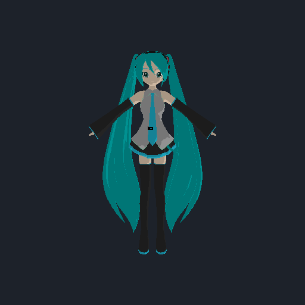
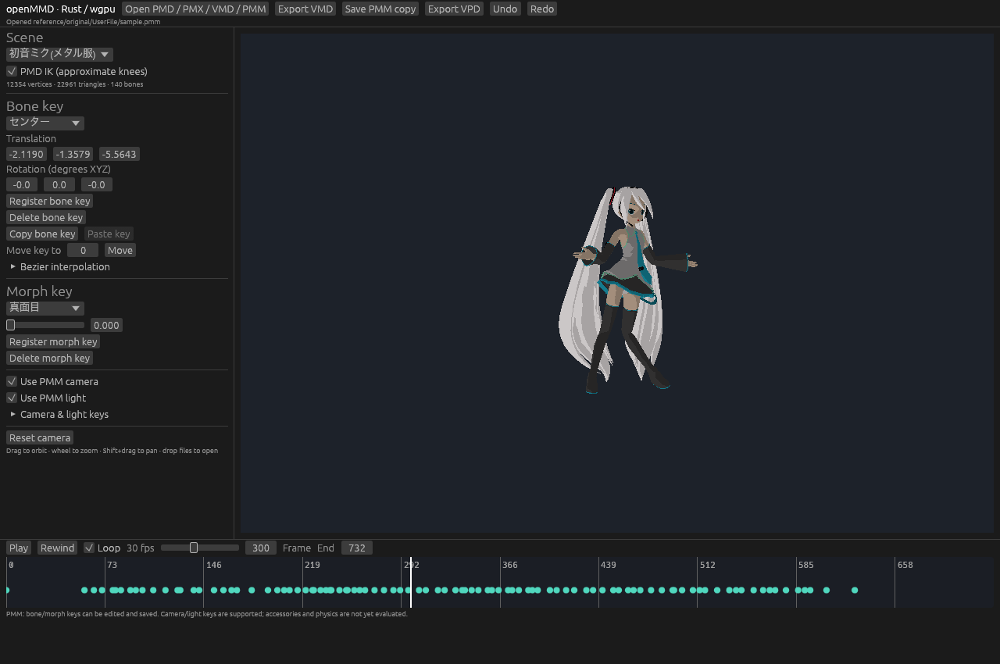

Bring a model.
Load PMD models or the supported subset of PMX. Inspect a textured mesh, its skeleton and vertex morphs in the GPU viewport.
Check format supportIndependent animation editor / Early development
RUST + WGPUFamiliar models. A new foundation.
An MMD-compatible editor being built in Rust,
with a GPU viewport powered by wgpu.
02 / FROM MODEL TO MOTION
Load PMD models or the supported subset of PMX. Inspect a textured mesh, its skeleton and vertex morphs in the GPU viewport.
Check format supportAdjust bone transforms and facial morphs. Import a VPD pose, use it as a starting point, or export a pose to share with an existing workflow.
VPD implementation notesPlay VMD motion, edit bone and morph keyframes on the timeline, and use undo and redo while refining the animation.
Read the project guide03 / BUILT IN THE OPEN
A Rust application with an immediate-mode editor and a wgpu rendering backend. The aim is a maintainable foundation for MMD workflows across desktop platforms.
The current renderer is intentionally basic. MMD’s full shading, physics, accessories and complete scene behavior are still ahead.
Look inside the implementation
PROJECT TRACKS / IN PROGRESS
Follow a PMM camera and light track, adjust their controls, and register or delete keys. Scene edits have their own undo history.
Camera transforms are approximate. Original MMD runtime equivalence has not yet been verified.

RUN IT IN YOUR BROWSER
A WebAssembly build with the shared PMD, PMX, VMD, VPD and PMM parsers, animation code and wgpu renderer. A browser editor, not a video or screenshot.
Select your model and its textures together. For a PMM project, include the referenced models. Files are processed locally in browser memory.
Use recent Chrome or Edge with WebGPU and hardware acceleration. This remains an early editor with the limitations listed below.
Launch openMMD Web04 / COMPATIBILITY, CLEARLY
This is an early implementation, not a complete replacement for MikuMikuDance. A file loading successfully does not guarantee identical playback or appearance.
| Format / system | Current support | The important limits |
|---|---|---|
| PMDModel | Implemented subset Mesh, diffuse textures, bones, vertex morphs and basic IK. | Basic shading and approximate IK. No rigid-body physics or complete MMD material behavior. |
| PMX 2.0 / 2.1Model | Partial Mesh, four bone influences, skeleton, vertex morphs and diffuse materials. | SDEF/QDEF use linear skinning. Other morph types and advanced bone behavior are not evaluated. Soft bodies are rejected. Details ↗ |
| VMD / VPDMotion / pose | Bone + morph workflow VMD bone/morph tracks and VPD bone pose import/export. | VMD camera, light, shadow and IK-switch tracks are not yet part of the motion workflow. VPD has no scene or timeline state. |
| PMM v1 / v2Project | Partial project editing Bone/morph tracks, camera/light playback and keyframe editing. | Camera transforms are approximate; original runtime equivalence is unverified. Accessories, physics, shadows and all original editor settings are not supported. Preserve the original project. |
| WebGPU / WASMBrowser editor | Working browser build Local files, shared Rust rendering and animation, key editing and exports. | Recent Chrome/Edge and hardware acceleration required. Files stay in tab memory. PMM camera/light key editing and advanced curve operations remain desktop-only. |
| Desktop platformsBuild + runtime | macOS development Rust + wgpu foundations for macOS, Windows and Linux. | Windows and Linux validation is planned. Cross-platform architecture is not a claim that every target has been verified. |
Compatibility grows through reproducible tests and real assets. Report a concrete mismatch
05 / TAKE IT FOR A SPIN
Install the Rust toolchain and the platform dependencies described in the README. Clone the repository, then launch a release build.
Read setup instructionsgit clone https://github.com/LakoMoor/openMMD.git
cd openMMD
cargo run --releaseBuilds locally. No prebuilt download is promised.